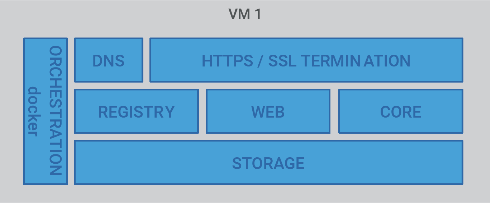
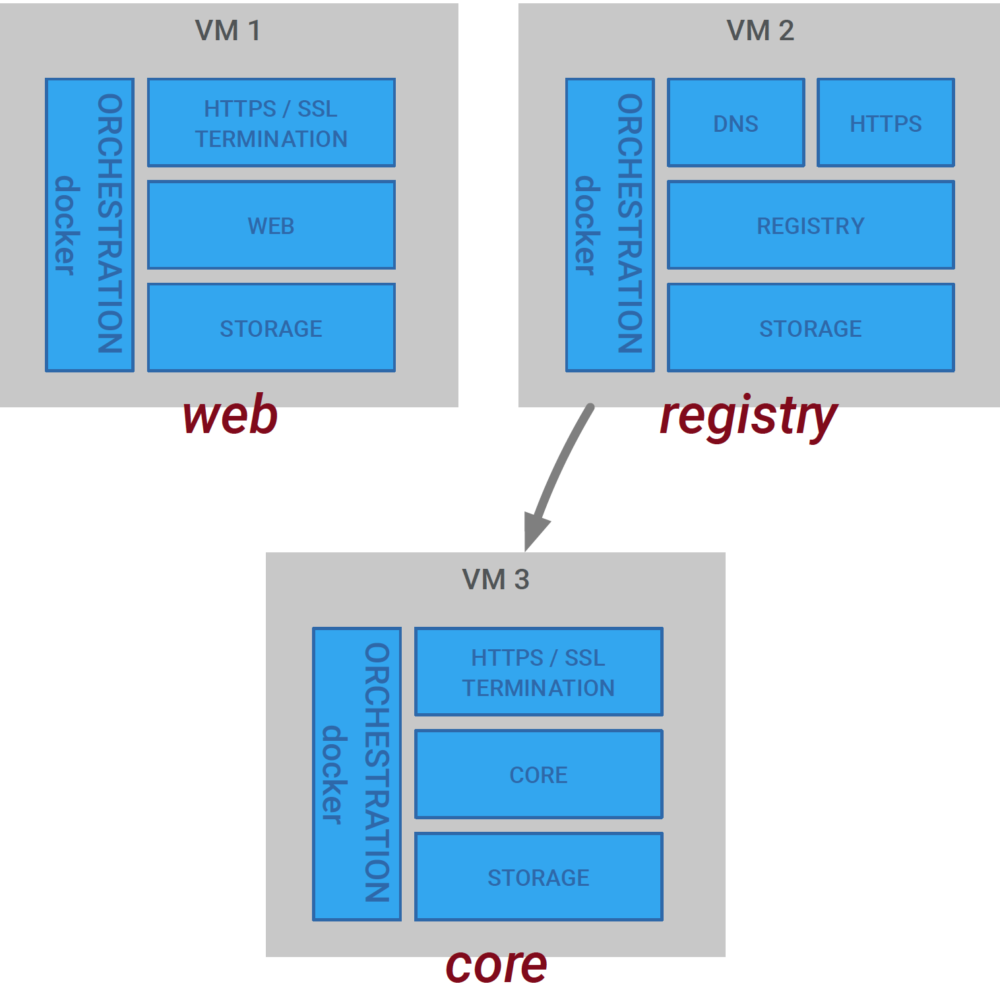
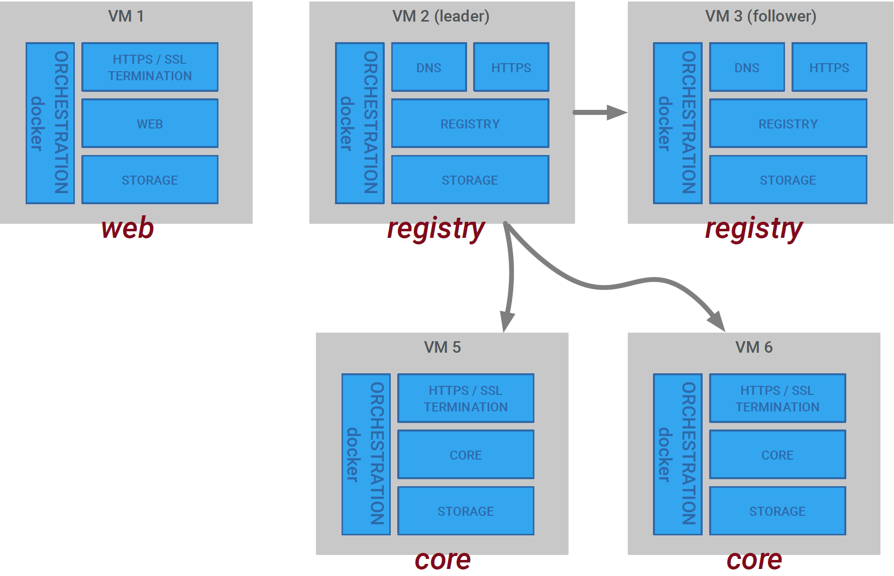
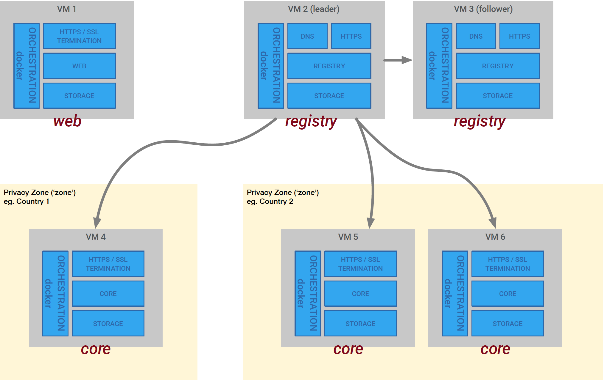

Get started with Pryv.IO
This tutorial will help you to deploy Pryv.IO in your environment.
We will guide you through:
Pryv.IO Components
Pryv.IO is composed of three main components :
Static-web: It serves static content (icons, login web page, web applications).Service-Register: Holds the mapping between usernames and the core server storing the data (service-core). It can be replicated in a high-availability context with one master and multiple slaves. Requests are made by DNS or HTTPS protocols.Service-Core: Stores data and regulates access to the data. The core service is the most privacy-sensitive component of the system. It can be distributed for load balancing and can be replicated for High Availability.
Deployment methods
Pryv.IO can be deployed in various ways, depending on your use cases. It can be deployed in a single node for tests or development and can be deployed through mutliple machines accross the globe for production environment taking advantage from High Availability, scalability and data locality.
We propose below a representation of the two deployment methods.
1. Single node
With the single node model, all roles are installed on the same virtual machine either on-premise or in the cloud.

This can be ideal for development purposes or for testing and simple proof of concept projects.
We don't recommend this model for production. For such environment, you should instead use cluster deployment scaled on your need and data load.
2. Cluster
With the cluster model, all roles are installed on separate machines. This model can be adapted to your needs, as depicted in the following deployment cases.
Proof of Concept
Here is the minimal cluster deployment for demonstrating Pryv in a first phase. It is adapted for testing proof of concept.

Partioning for load
Partitioning for load can be use for production enviroment. The goal is to spread the data through multiple core servers. In this case, user accounts are split among core servers in a round-robin fashion.
We recommend the creation of one or more follower nodes for the registry node. This avoids creating a single point of failure.

Partioning for privacy
The diagram below shows a model that benefits from one of the key advantage of Pryv.io, namely the partitioning of data among multiple privacy zones.
In practice, privacy zones will often correspond to countries (legislations) or smaller entities that handle data and data privacy differently.

Prerequisites
System requierements
In this chapter, we present a list of minimal system requirements for single node and cluster deployments.
Single node
| Aspect | Minimal |
|---|---|
| RAM | 4GB |
| CPU Cores | 2 |
| Data Disk | Depending on storage needs |
| Base OS | Linux / Ubuntu 16.04 |
| Docker | >=1.13.0 |
| Docker-Compose | Latest as of Nov 17 |
| Service ports | tcp/443, tcp/80, udp/53 |
| Administrative ports | tcp/22 |
Cluster
| Aspect | Minimal | Minimal | Minimal |
|---|---|---|---|
Web role |
Registry role |
Core role |
|
| RAM | 1GB | 2GB | 2GB |
| CPU Cores | 1 | 2 | 2 |
| OS Disk | 15GB | 15GB | 15GB |
| Data Disk | not needed | 15GB | 15GB |
| Base OS | Linux / Ubuntu 16.04 | Linux / Ubuntu 16.04 | Linux / Ubuntu 16.04 |
| Docker | >=1.13.0 | >=1.13.0 | >=1.13.0 |
| Docker-Compose | Latest as of Nov 17 | Latest as of Nov 17 | Latest as of Nov 17 |
| Service ports | tcp/443 | tcp/443, udp/53 | tcp/443, udp/53 |
| Administrative ports | tcp/22 | tcp/22 | tcp/22 |
Docker
Pryv.IO is packaged in Docker containers, with each role running in a separated container. Docker-compose is used for running all containers as a single application.
You can compare your docker and docker-compose versions against the ones we recommand using the following commands :
$ docker -v
Docker version 1.13.1, build 092cba3
$ docker-compose -v
docker-compose version 1.11.2, build dfed245Wildcarde Certificate
All three Pryv.IO roles use Nginx to terminate inbound HTTPS connections. Thus, a wildcard certificate for your domain is required to that effect.
To deploy a free SSL certificate, please follow this link.
You will need to store that certificate along with the CA chain into the appropriate locations.
Please follow this link to find instructions on how to convert a certificate for nginx.
DNS
If your DNS is set up correctly, the following command should yield the fully qualified domain name of the machine you intend to use as a central Pryv.IO registry server:
$ dig NS MYPRYVDOMAINNormally, your NS records should resolve to the names you gave to the registry server you intend to set up. Please check if your A records exist and point to the same machine.
Installation
This section will describe the installation steps for a single node deployment.
To obtain the tarballs for the installation, please contact the Pryv Sales team
Let's first create the
${PRYV_CONF_ROOT}directory where all your Pryv data should live. We suggest something like/var/pryv$ mkdir /var/pryvCopy the configuration tarball to ${PRYV_CONF_ROOT} directory
cp single_node.zip /var/pryv/Untar the configuration in place
$ unzip /var/pryv/single_node.zipYou should have the three following entries now:
- A file called
run-${ROLE}. This is your startup script. - A file called
${ROLE}.yml. This is the docker-compose script that is used to launch the service. - A directory called
${ROLE}. This contains configuration and data directories that will be mapped as volumes in the various docker containers.
Where
${ROLE}ispryvfor a single node deployment.- A file called
Then, place the certificate files generated previously in the following locations for each respective role :
core:
core/nginx/conf/secret/MYPRYVDOMAIN-bundle.crtandcore/nginx/conf/secret/MYPRYVDOMAIN-key.pemstatic:
static/nginx/conf/secret/MYPRYVDOMAIN-bundle.crtandstatic/nginx/conf/secret/MYPRYVDOMAIN-key.pemreg:
reg/nginx/conf/secret/MYPRYVDOMAIN-bundle.crtandreg/nginx/conf/secret/MYPRYVDOMAIN-key.pem
Edit the nginx server configuration file in
${ROLE}/nginx/conf/nginx.confto point to the certificate files.Launching the installation
Log in using the docker credentials, it allows to gain pull access to Pryv.IO docker images.
To obtain theses credentials, please contact Pryv Sales team.
$ sudo docker login -u ${USER_ID} -p ${SECRET} pryvsa-docker-release.bintray.ioReplace the ${USER_ID} and ${SECRET} with credentials received by Pryv team.
You can finally launch the installation by typing the following command :
$ sudo ./run-${ROLE}In order to check which Docker containers are running, you can type :
$ sudo docker ps -a- You have now a working Pryv.IO installation.
You can test this by directing a browser at https://sw.${MYPRYVDOMAIN}/access/register.html and filling in the form.